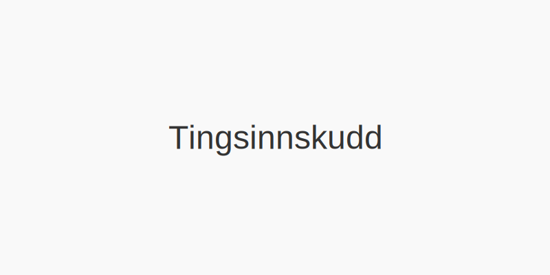
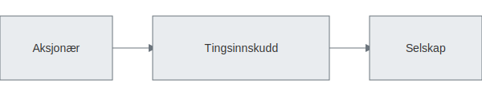

Tingsinnskudd (også kalt apportinnskudd eller naturalinnskudd) er innskudd av eiendeler som maskiner, utstyr, eiendom eller andre verdier som egenkapital i et aksjeselskap ved kapitalforhøyelse. Verdien fastsettes gjennom revisorattestasjon og registreres i Foretaksregisteret.

Definisjon av Tingsinnskudd
Tingsinnskudd er en form for egenkapitaltilførsel der bidragsyter tilfører selskapet eiendeler i stedet for kontanter. Dette kan omfatte både materielle og immaterielle eiendeler som er relevante for selskapets drift.
Juridisk rammeverk
Prosessen for tingsinnskudd reguleres av Aksjeloven og selskapets vedtekter. Hovedkravene inkluderer:
- Utarbeidelse av prospekt og verdsettelsesrapport i tråd med aksjelovens krav om verdivurdering.
- Revisorattestasjon av verdien av de innskutte eiendelene.
- Godkjenning i generalforsamling før registrering.
- Registrering av kapitalforhøyelsen med tingsinnskudd i Foretaksregisteret.
Eksempler på Tingsinnskudd
| Type eiendel | Beskrivelse | Vurderingsmetode |
|---|---|---|
| Maskiner og utstyr | Produksjonsutstyr som er nødvendig i drift | Markedspris eller beregnet gjenanskaffelsesverdi |
| Fast eiendom | Bygninger og tomt brukt i virksomheten | Verdivurdering basert på takst eller markedsanalyse |
| Immaterielle rettigheter | Patenter, varemerker og lisenser | Diskontert kontantstrøm eller markedsverdibasis |
| Varer på lager | Ferdigvarer eller råvarer | Kostpris eller netto realiserbar verdi |

Regnskapsføring av Tingsinnskudd
Ved regnskapsføring av tingsinnskudd føres verdien på innskutte eiendeler mot egenkapitalkontoer som vist nedenfor:
| Konto | Debet | Kredit |
|---|---|---|
| Diverse eiendelskonto | Bokført verdi av innskuddet | |
| Aksjekapital | Pålydende verdi av tilsvarende aksjer | |
| Overkursfond | Overkurs ved forskjell mellom emisjonskurs og pålydende |
For mer informasjon om regnskapsføring ved kapitalforhøyelse, se Hva er Kapitalforhøyelse?.
Fordeler og Ulemper
- Fordeler:
- Gjør det mulig å tilføre egenkapital uten kontanter.
- Kan styrke selskapets drift gjennom tilgang på relevante eiendeler.
- Ulemper:
- Krever omfattende dokumentasjon og verdivurdering.
- Risiko for uenighet om verdsettelse mellom eier og revisor.
Ofte stilte spørsmål
Hvilke eiendeler kan benyttes som tingsinnskudd?
Alle eiendeler som har målbar verdi, inkludert maskiner, eiendom, patenter og varelager, kan benyttes som tingsinnskudd. Verdivurderingen må utføres av en uavhengig revisor.
Hvordan fastsettes verdien av tingsinnskudd?
Verdien fastsettes gjennom revisorattestasjon i henhold til Aksjeloven og god regnskapsskikk.